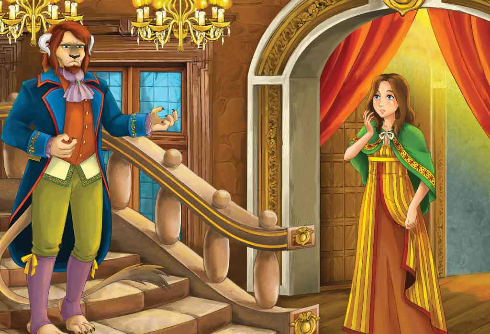
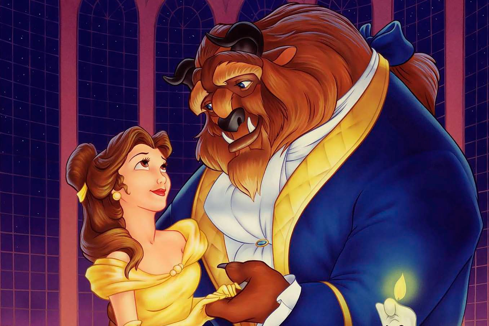
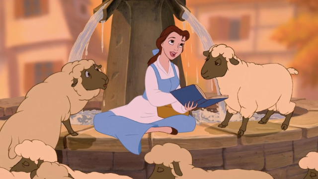

A long time ago, in a far away land, a merchant was returning home after a long journey. As night fell, he entered a deep forest. His head was full of thoughts of his six daughters. He had left home in summer, and now he was returning in deep winter.

The most bitter sleet and snow came down, and his horse stumbled on a patch of ice. He heard wolves howling, and soon he realised that he was lost.
At last, he saw some sort of track. At the beginning it was rough and slippery, but soon it led him into an avenue of orange trees covered with flowers and fruit but here there was no snow.
He saw a flight of stone steps. He went up them into a great castle.
 Inside he passed through several splendid rooms.
Everywhere in the castle there was a deep silence. At last, he stopped in a small room where a fire was burning. He lay down on a couch and very soon fell into a sweet sleep.
He woke up feeling hungry. He was still alone, but a good dinner had been laid on a little table. He began to eat, hoping that he might soon have an chance to thank his kind host, whoever it might be - but no one appeared.
Then he went down into the garden, and though it was winter
everywhere else, here the sun shone, and the birds sang, and the flowers bloomed, and the air was soft and sweet.
 The path had a hedge of roses on each side of it, and the merchant thought he had never seen or smelled such beautiful flowers. Then he remembered a promise he had made to his youngest daughter, who was so lovely that everyone knew her as Beauty. Before setting out on his journey, he had asked his daughters what presents they would like him to bring back for them. The five eldest wished for jewels and fine clothes, but Beauty asked only for a single rose. Now, as he stopped to pick a rose to take home to Beauty, he was startled by a strange noise behind him. ”